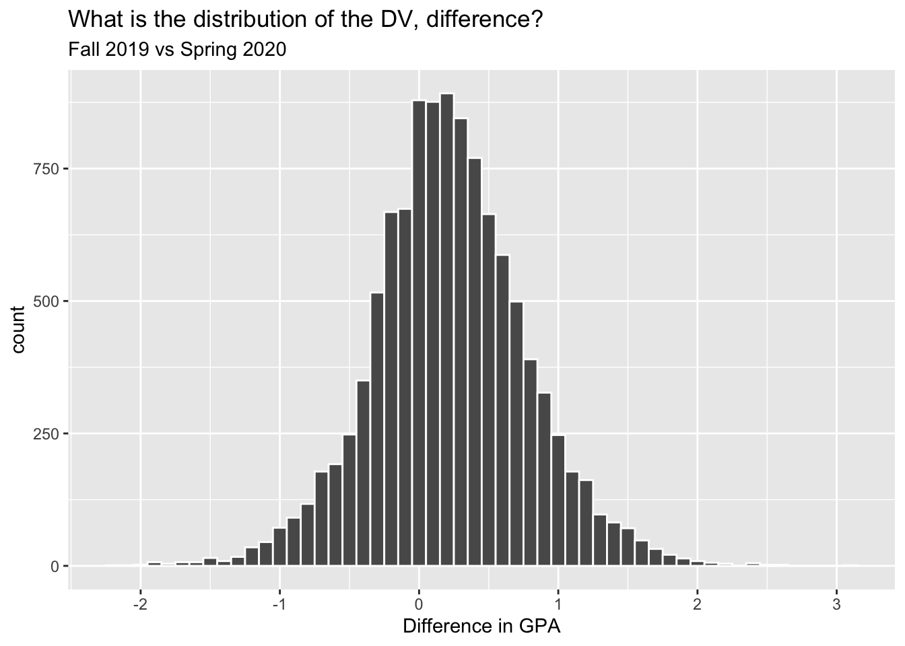

One page description
Topic
Background
Research Question
What characteristics explain the differences in GPA pre- and post-Pandemic?
Professor characteristics (Sex/Gender, Age, Tenure, etc.)
Course level (Graduate vs Undergraduate)
College (e.g. CEHD vs PMAP vs Robinson Business School, etc.)
Department (EPRS vs EPSF vs EPY etc.)
read_csv("fall_vs_spring.csv") %>%
select(professor, course, crn_fall, crn_spring, n_students_fall, n_students_spring, avg_gpa_fall, avg_gpa_spring, diff) %>%
head(10) %>%
kable(caption = "2019-2020 Academic Year")| professor | course | crn_fall | crn_spring | n_students_fall | n_students_spring | avg_gpa_fall | avg_gpa_spring | diff |
|---|---|---|---|---|---|---|---|---|
| Moore, Robert | ECON 2100 | 80001 | 21971 | 14 | 10 | 3.86 | 4.11 | 0.25 |
| Tolley, Michael | ART 1010 | 80046 | 21045 | 22 | 21 | 3.14 | 2.90 | -0.24 |
| Wilson, Jiha | ART 1010 | 80047 | 11628 | 22 | 20 | 3.29 | 3.15 | -0.14 |
| Camoosa, Joseph | ART 1010 | 80048 | 15439 | 17 | 20 | 3.85 | 3.89 | 0.04 |
| Kroeppler, Karl | ART 1020 | 80049 | 13067 | 18 | 18 | 2.76 | 3.38 | 0.62 |
| Sturgess, Robert | ART 1030 | 80050 | 11634 | 16 | 17 | 2.50 | 3.60 | 1.10 |
| McGimsey, Ben | ASTR 1000 | 80052 | 11711 | 62 | 95 | 2.29 | 2.60 | 0.31 |
| McGimsey, Ben | ASTR 1000 | 80052 | 17230 | 62 | 62 | 2.29 | 3.37 | 1.08 |
| Beirne, Mark | BIOL 2300 | 80057 | 17699 | 115 | 100 | 2.86 | 2.71 | -0.15 |
| Song, Chi-Sun | BIOL 3800 | 80058 | 22674 | 35 | 58 | 2.47 | 2.75 | 0.28 |
fall_vs_spring %>% ggplot(aes(diff)) +
geom_histogram(color = "white", binwidth = .1) +
labs(x = "Difference in GPA",
title = "What is the distribution of the DV, difference?",
subtitle = "Fall 2019 vs Spring 2020")